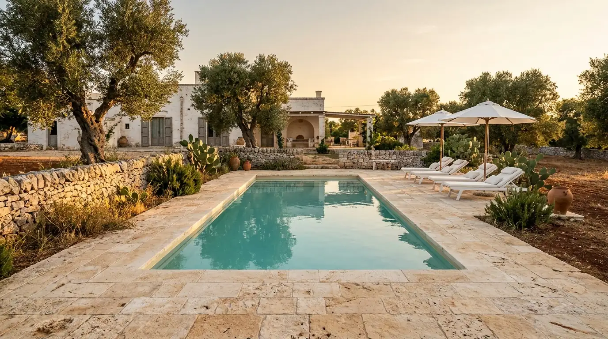
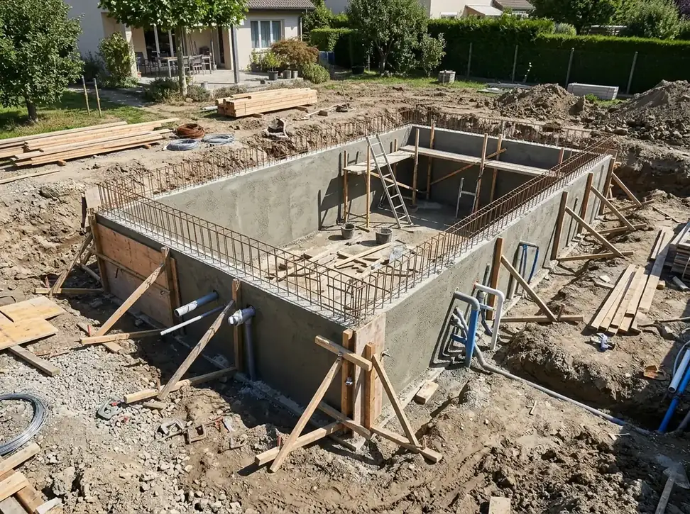
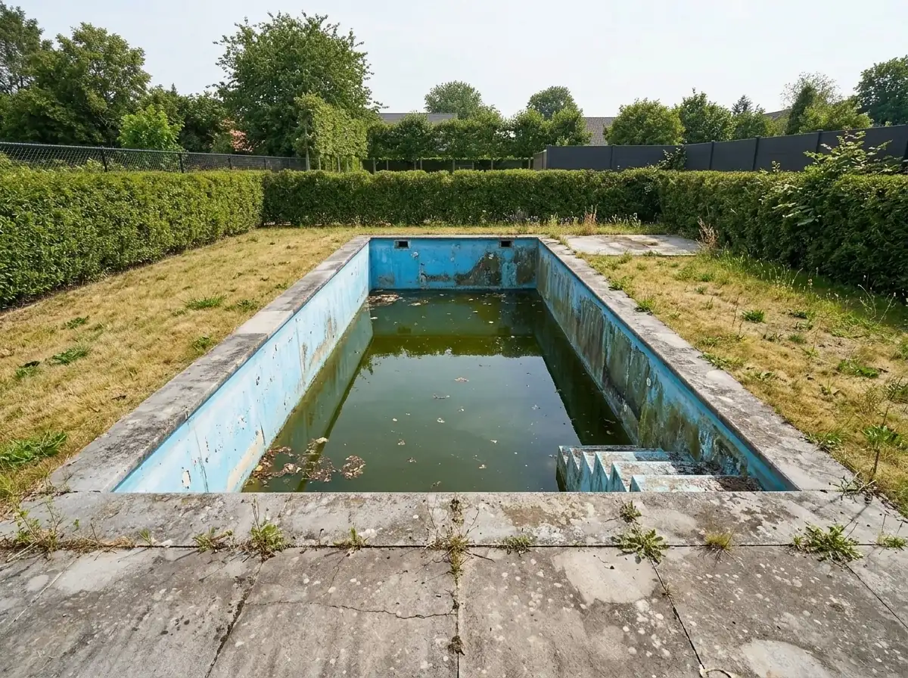
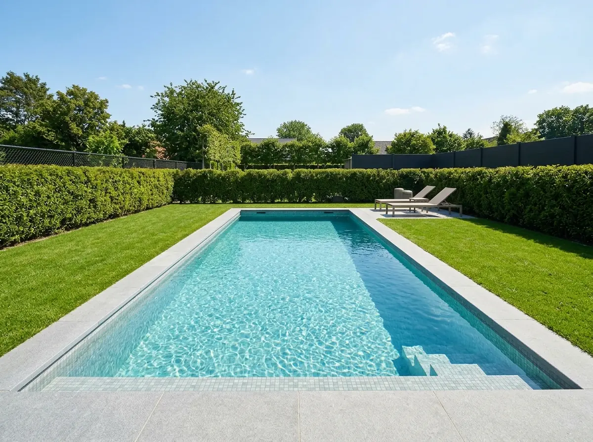

Piscine · Ostuni, Fasano, Monopoli
Piscine costruite tra gli ulivi, e tenute pulite tutta l'estate.
Costruiamo e rifacciamo piscine per case, B&B e masserie della Valle d'Itria. Da aprile a ottobre ce ne occupiamo noi, con il registro dei controlli sempre in ordine.
Passo passo
Come nasce una piscina
Scorri: la vasca si costruisce e poi si riempie.
- ScavoTracciamo la vasca e scaviamo, lasciando lo spazio per il locale tecnico.
- StrutturaPlatea e pareti in cemento armato, gettate in un'unica volta per non avere giunti.
- ImpiantiSkimmer, bocchette, scarico di fondo, luci. Prova di tenuta delle tubazioni prima di chiudere.
- RivestimentoImpermeabilizzazione, poi mosaico o liner. Bordo in pietra di Trani o travertino.
- AcquaRiempimento, avvio del filtro e dosaggio. Ti spieghiamo come leggere i valori.
B&B, masserie, case vacanza
La piscina degli ospiti, senza pensieri in alta stagione
Per chi affitta le camere la piscina deve essere perfetta ogni mattina. Con il contratto stagionale passiamo noi, teniamo il registro dei controlli richiesto per le piscine usate dagli ospiti e interveniamo in fretta se qualcosa si ferma.
- Passaggi fissi nei giorni di cambio camere
- Registro dei controlli dell'acqua aggiornato
- Prodotti e ricambi compresi nel canone
- Una persona di riferimento con il telefono acceso in agosto
Cosa facciamo, mese per mese
Passaggio settimanale: valori dell'acqua, pulizia, controlavaggio del filtro.

Anche durante la costruzione teniamo il cantiere separato dal giardino degli ospiti.


DopoPrimaRifare una piscina vecchia
Trascina la linea. Vasca degli anni '90 con pittura scrostata: nuova impermeabilizzazione, mosaico, bordo in pietra e filtro sostituito. Lavoro di esempio, foto generate con l'IA.
Spesso la struttura è sana e si rifà solo la pelle: costa meno e si fa tra una stagione e l'altra.
Chi siamo
Abbiamo iniziato curando le piscine di alcune masserie di Fasano, poi abbiamo cominciato a costruirle. [Nome del titolare] e la sua squadra di quattro persone passano la stagione sulle manutenzioni e l'inverno nei cantieri, quando i giardini sono vuoti.
Dove lavoriamo
Ostuni, Fasano, Monopoli, Cisternino, Locorotondo, Martina Franca, Ceglie Messapica, Polignano a Mare
Spazio per le prove vere: abilitazioni per gli impianti, polizza per i lavori, schede dei prodotti usati per il trattamento dell'acqua, garanzia scritta sull'impermeabilizzazione.
Domande
Quando bisogna iniziare per averla a giugno?
Per una piscina nuova conviene firmare entro l'inverno: tra permessi, scavo e rivestimento servono di solito tre o quattro mesi.
Serve un permesso per costruirla?
Sì, una pratica edilizia in comune firmata da un tecnico. Nelle zone con vincolo paesaggistico serve anche quello. Ti aiutiamo a preparare tutto.
Cloro o sale?
Con l'elettrolisi a sale si dosa il cloro in automatico e l'acqua è più morbida. Per le strutture con molti ospiti valutiamo insieme il sistema più semplice da controllare.
Fate solo la manutenzione, anche su piscine non vostre?
Sì. Al primo passaggio controlliamo filtro, pompa e perdite e ti diciamo cosa va sistemato.
Parliamo della tua piscina
Nuova, da rifare o da seguire in stagione: scrivici due righe e fissiamo un sopralluogo.
- Telefono
- Numero di esempio
- Indirizzo di esempio
- Sede
- Contrada di esempio, Fasano (BR)